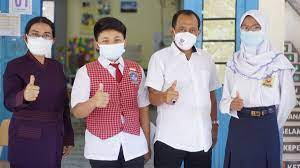

Sambutan Kepala Sekolah

Assalamualaikum Wr Wb.
Puji syukur kehadirat Allah SWT yang telah melimpahkan rahmat dan hidayah-Nya kepada kita sehingga Allah SWT selalu meridlohi segala usaha kita dalam upaya meningkatkan mutu pendidikan di SMP Negeri 35 Surabaya.
Web blog SMP Negeri 35 Surabaya ini dibuat sebagai media informasi dan komunikasi bagi Sekolah untuk memberikan informasi kepada masyarakat luas tentang SMP Negeri 35 Surabaya secara akurat , utuh , lengkap dan terpercaya tentang SMP Negeri 35 Surabaya.
Web blog ini memuat Visi dan Misi Sekolah serta informasi lain tentang SMP Negeri 35 Surabaya yang selalu berbenah dan mengembangkan diri menjadi Sekolah Kawasan di Surabaya Timur dan Sekolah Adiwiyata Nasional.
Wassalammualaikum Wr Wb.
Kepala Sekolah,
Drs. SUMARLI, M.Ag.